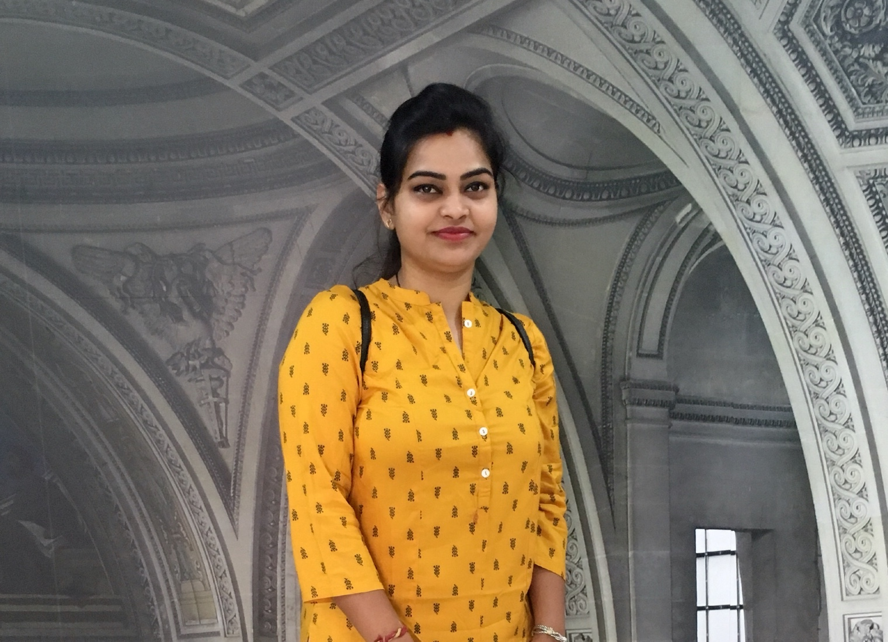

About Me
I am a software engineer with more than 5 years of experience as an SDET, possessing sound knowledge on C# .NET Coding. I was associated with many IT firms like Mindtree Limited, PegaSystems India, MotivityLabs and Cigniti Technologies. I always push me to align towards latest advancements of IT Industry. I served for Cloud, Healthcare and Insurance domains.My Primary skills are C#.Net, PowerShell, Batch Scripting, Automation Testing tools.
I hold the certifications like Microsoft Certified Specialist Programming in C#- (70-483), Pega PRPC Certified System Architect (CSA), Certified Professional in ISTQB Foundation Exam,
Holds a Distinction medal in Metriculation. Stood Top in graduation for the stream Electronics Communication 2006-2010 batch. Awarded with "Best Peformer of Mindtree Campus Batch 2010", "Mindtree People Spot", "Ten on Ten" Awards @Mindtree Limited Recognised as "Employer of the Month" and "Best Team Player" @MotivityLabs.
I have a beautiful family who always support me in every step I take. Without my family, a large part of my life and culture would be missing. I got married to a handsome cool guy who works as a software engineer. His support encourages me to achieve something in life. I am blessed witha beautiful daughter and pretty much keeeps me busy all the time.